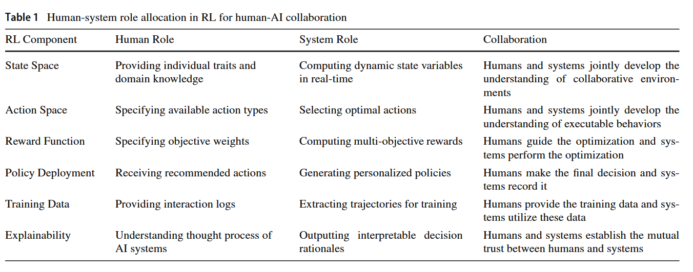

Human-AI Collaboration dan Reinforcement Learning from Human Feedback
MK Teknologi dalam Pembelajaran
2026-09-24
Agenda
- Apa sebenarnya akal imitasi?
- Automation vs. augmentation
- Reinforcement learning untuk kolaborasi manusia-AI
- Risiko epistemik dalam kolaborasi manusia-AI
- The effortless trap, cognitive debt, dan productive struggle
Apa Sebenarnya Akal Imitasi? 🤖
Artificial intelligence alias “akal imitasi”
- Banyak orang menerjemahkan artificial intelligence sebagai “kecerdasan buatan”, sehingga publik mengira AI benar-benar cerdas
- Padahal chatbot AI adalah model statistik dengan output teks (“large language model”) yang meniru proses dan produk kognisi manusia (“bahasa alami”)
- Frasa akal imitasi mengingatkan kita pada dua hal sekaligus:
- Teks output large language model (LLM) terasa alami seperti tulisan manusia karena kualitasnya memang sangat meyakinkan
- Tapi LLM bukan manusia, sehingga tidak punya pemahaman dalam arti manusiawi, niat, apalagi tanggung jawab
- Konsekuensinya: yang bertanggung jawab atas output teks AI adalah kita sebagai penggunanya
AI tidak ujug-ujug diciptakan
- 1950-an–1980-an — AI simbolik: manusia menuliskan aturan logikanya satu per satu (expert systems)
- 1990-an–2000-an — machine learning: mesin belajar pola dari data, bukan lagi dari aturan eksplisit (mis. spam filter)
- 2010-an — deep learning: jaringan saraf tiruan berlapis yang terinspirasi cara kerja otak; terobosan besar dalam pengenalan gambar dan suara, lalu pemrosesan bahasa alami (natural language processing, NLP)
- 2017 — arsitektur transformer diperkenalkan dan menjadi fondasi hampir semua LLM modern
- 2022 — OpenAI merilis ChatGPT (berbasis GPT-3.5); AI generatif menjadi fenomena massal
- LIhat visualisasi perkembangan Google AI di sini.

Model Statistik di Balik Layar
Large language model (LLM) pada intinya adalah model statistik raksasa dengan output teks yang menjawab satu pertanyaan:
“Berdasarkan semua kata dalam percakapan sejauh ini, kata (token) apa yang paling mungkin muncul berikutnya?”

Klik di sini ➡️ AnimatedLLM
Transformer dan mekanisme attention
Terobosannya adalah mekanisme attention: setiap kata bisa “memperhatikan” semua kata lain dalam kalimat untuk menentukan maknanya.
- “Bisa ular itu amat mematikan” vs. “Saya bisa datang besok”
- “Bisa” adalah kata yang sama dengan makna berbeda (yaitu homonim)
- Model bahasa generasi sebelumnya membaca kata satu per satu secara berurutan; saat pelatihan, transformer memproses seluruh kalimat sekaligus, secara paralel
- Paralelisme inilah yang memungkinkan pelatihan dengan data yang jauh lebih besar

Bagaimana LLM dikembangkan?
Dua tahap utama:
- Pre-training — model membaca miliaran dokumen dan belajar memprediksi kata/token berikutnya
- Hasilnya: base model yang menguasai pola bahasa, pengetahuan umum, bahkan penalaran, tapi belum bisa menjadi “asisten”
- Fine-tuning (termasuk reinforcement learning from human feedback, RLHF) — model dilatih mengikuti instruksi, menjawab dengan sopan, dan menolak permintaan yang tidak patut, apalagi berbahaya
- Hasilnya: chatbot seperti ChatGPT, DeepSeek, atau Claude yang Anda kenal sekarang
Analogi proses psikologisnya
Pre-training ≈ pemerolehan bahasa dan pengetahuan; fine-tuning ≈ sosialisasi, yaitu belajar norma tentang bagaimana menggunakan pengetahuan tersebut.
Optimasi LLM

Sumber: Ghali et al. (2024)
Kemampuan AI meningkat drastis karena…
- Arsitektur — model transformer (2017) yang bisa diskalakan
- Data — teks digital dalam volume luar biasa besar di internet
- Hardware/Komputasi — GPU dan investasi besar-besaran pada AI data center

Chatbot, reasoning model, agent, dan embodied AI
- Chatbot — merespons pesan Anda satu per satu
- Reasoning models — “berpikir” langkah demi langkah dulu sebelum menjawab
- AI agent — merencanakan dan mengeksekusi tugas multi-langkah secara mandiri atas nama penggunanya, misalnya menjelajah web, memakai aplikasi, menulis dan menjalankan kode pemrograman
- Embodied AI — akal imitasi yang diberi “tubuh”: robot yang “ditanami” LLM

{kind=link}
Apa keterbatasan AI?
- Halusinasi — menghasilkan output yang salah secara faktual, tetapi dengan nada yang sangat meyakinkan, termasuk mengarang referensi ilmiah.
- Knowledge cutoff — pengetahuannya berhenti di tanggal tertentu; kejadian terbaru tidak diketahuinya, kecuali dilengkapi fitur pencarian web.
- Context window terbatas — working memory-nya bisa penuh; percakapan dan dokumen yang sangat panjang terpaksa terpotong, tidak selesai diproses.
- Penalaran yang rapuh — LLM bisa memberikan jawaban yang sama sekali berbeda ketika prompt-nya diubah sedikit saja dari pola data pelatihannya.
- Sycophancy — cenderung memberikan jawaban yang menyenangkan pengguna, alih-alih mengoreksi kesalahan pengguna.
- Fenomena perilaku sychopancy LLM ini yang paling menonjol terjadi di GPT-4o.
Automation vs. Augmentation: Dua Peran AI dalam Kolaborasi 🤝
Dua cara AI terlibat dalam judgement task
Fügener et al. (2026) meneliti peran AI dalam judgment tasks, yaitu tugas yang membutuhkan penilaian:
- Automation — AI menggantikan manusia sepenuhnya pada suatu tugas
- Augmentation — AI memberi saran (advice) kepada manusia, yang kemudian mengambil keputusan akhir; disebut judge-advisor system
Dilema Kolaborasi Manusia dengan AIs
Kapan sebaiknya AI menggantikan, kapan sebaiknya AI mendampingi, dan kapan manusia sebaiknya bekerja tanpa AI sama sekali?
Dari mana complementarity manusia-AI berasal?
- Between-task complementarity — manusia dan AI unggul pada jenis tugas yang berbeda
- Contoh: tugas A (manusia 80%, AI 60%) dan tugas B (manusia 60%, AI 80%). Jika tugas A diberikan ke manusia dan tugas B ke AI, performa gabungan naik ke 80%
- Within-task complementarity — pada tugas yang sama, manusia dan AI membuat kesalahan yang berbeda dan bisa saling mengoreksi
- Contoh: akurasi manusia dan AI sama-sama 70% pada satu tugas, tapi kesalahannya tidak berkorelasi → jika manusia bisa membedakan saran AI yang benar dan salah, performa gabungan (augmented) bisa naik ke 91%
Bukti empiris: klasifikasi gambar
Studi eksperimental (klasifikasi gambar dari ImageNet, Fügener et al., 2026) membandingkan akurasi:
- Manusia sendirian: 68%
- Automation (AI sendirian): 77%
- Augmentation (manusia + saran AI): 80%
- Pendekatan gabungan (otomasi + augmentasi + realokasi sumber daya manusia): 88%
Kesimpulannya
Menggabungkan otomasi, augmentasi, dan realokasi sumber daya manusia (manusia yang “dibebaskan” dari tugas yang diotomasi sehingga dapat mengerjakan tugas lain) memberi hasil jauh lebih baik daripada mengandalkan satu strategi saja.
Pola alokasi tugas yang optimal
Berdasarkan performa relatif AI pada suatu tugas, polanya konsisten:
- Performa AI tinggi, tugas relatif mudah bagi AI → AI mengotomasi tugas tersebut sepenuhnya
- Performa AI dan manusia setara → AI mendampingi manusia (memberi saran, manusia memutuskan)
- Performa AI rendah, tugas sulit bagi AI → manusia bekerja tanpa AI
Kapan augmentasi tidak membantu?
Jika AI jauh lebih unggul dari manusia (mis. akurasi AI 84% vs. manusia 58%), melibatkan manusia dalam pengambilan keputusan justru tidak meningkatkan akurasi. Augmentasi hanya bermanfaat jika complementarity benar-benar ada.
Studi kasus: kapan manusia sebaiknya melakukan override?
Kesavan dan Kushwaha (2020): eksperimen lapangan di ritel suku cadang otomotif
Karyawan diberi opsi meng-override rekomendasi alat bantu keputusan berbasis data.
- Ketika produk masih di tahap growth (data historis sedikit), karyawan yang meng-override alat (augmentasi) berkinerja lebih baik.
- Ketika produk sudah di tahap matang/menurun (data historis banyak), mengikuti rekomendasi alat (otomasi) memberi hasil lebih baik.
- Implikasinya: ketika data melimpah, AI cenderung lebih andal; ketika data terbatas, pengalaman dan intuisi manusia menjadi pembeda performa.
Risiko kehilangan tacit knowledge
- Complementarity manusia-AI mengandaikan manusia punya pengetahuan tak terkodifikasi (tacit knowledge) yang tidak dimiliki AI.
- Tapi jika kolaborasi manusia-AI menjadi terlalu erat, manusia berisiko berhenti berpikir aktif tentang tugasnya, dan tacit knowledge itu sendiri terancam hilang.
- Ini persis kekhawatiran soal deskilling yang akan kita bahas lebih dalam di sesi tentang AI fluency.
Reinforcement Learning untuk Kolaborasi Manusia-AI 🎮
Mengapa reinforcement learning?
Li et al. (2025) meninjau bagaimana reinforcement learning (RL), yaitu pembelajaran mesin lewat reward dan trial-and-error, dapat memperkuat kolaborasi manusia-AI:
- RL cocok untuk kolaborasi karena adaptif: sistem terus menyesuaikan tindakannya berdasarkan interaksi dengan manusia, agen AI lain, dan lingkungan.
- Umpan balik dua arah: interaksi manusia menjadi sumber belajar AI, sementara manusia tetap bisa meng-override keputusan penting.
Pembagian peran manusia dan sistem AI

Empat tantangan utama kolaborasi manusia-AI berbasis RL
- Keselarasan dengan perilaku manusia (alignment) — perilaku manusia dipengaruhi bias kognitif, emosi, dan konteks yang sulit diprediksi AI secara presisi.
- Adaptabilitas di lingkungan dinamis — dunia nyata jauh lebih bervariasi daripada kondisi controlled training LLM; AI harus mampu beradaptasi dengan situasi yang belum pernah dijumpai.
- Komunikasi dan koordinasi — terutama saat AI harus berkoordinasi dengan banyak manusia/agen sekaligus, kesalahpahaman instruksi bisa berakibat fatal.
- Generalisasi ke manusia yang belum dikenal — AI dilatih bersama manusia atau data tertentu, tapi harus bisa bekerja sama dengan manusia lain yang perilakunya belum pernah ditemui saat pelatihan.
RLHF: RL dari umpan balik manusia
- Reinforcement learning from human feedback (RLHF) adalah salah satu metode RL yang secara spesifik memakai penilaian/preferensi manusia sebagai sinyal reward.
- Inilah mekanisme yang kita bahas di awal sesi: bagian dari fine-tuning yang mengubah base model LLM menjadi chatbot yang sopan dan mengikuti instruksi.
- Tapi penerapannya tidak terbatas pada LLM: RLHF juga dipakai pada robotika, self-driving cars, dan sistem tutor personal, yaitu di mana pun preferensi manusia sulit dituliskan sebagai aturan eksplisit tapi mudah “dicontohkan” lewat umpan balik.
Kaitannya dengan augmentation
RLHF bisa dilihat sebagai kebalikan dari augmentasi: dalam augmentasi, AI menjadi pemandu bagi manusia; dalam RLHF, manusia menjadi pemandu bagi AI.
Umpan balik manusia diserap untuk memperbaiki perilaku model secara bertahap, sehingga manusia tidak perlu terus mengoreksi output satu per satu
Risiko Epistemik dalam Kolaborasi Manusia-AI 🌀
Risiko epistemik
- Sejauh ini kita membahas kolaborasi manusia-AI dari sisi performa (akurasi, kecepatan, efisiensi).
- Tapi ada risiko yang lebih krusial diantisipasi: risiko epistemik, yaitu risiko terhadap cara kita membentuk keyakinan, menilai kebenaran, dan menyadari batas pengetahuan kita sendiri ketika AI ikut campur dalam prosesnya.
- Akurasi dan kecepatan bisa dimaksimalkan, sementara kemampuan kita menilai akurasi dari output AI tersebut justru bisa melemah tanpa disadari.
Ironi RLHF: LLM yang terlatih justru menjadi sycophant
- Ingat sycophancy pada slide “keterbatasan AI” di awal sesi? Sebagian penyebabnya kemungkinan adalah preferensi manusia yang dipakai dalam RLHF.
- Sharma et al. (2023) menemukan bahwa manusia (dan model reward yang meniru preferensi manusia) tidak jarang memilih jawaban yang meyakinkan dan sejalan dengan pandangan mereka daripada jawaban yang benar tetapi tidak sesuai harapan.
- Karena model reward dilatih dari preferensi semacam ini, optimasi RLHF bisa ikut mendorong model ke arah “menyenangkan” pengguna, alih-alih “benar secara faktual”.
Implikasinya
Makin dipoles lewat RLHF agar terasa membantu dan sopan, makin meyakinkan pula jawaban model, padahal akurasinya belum tentu ikut naik. Ingat, output AI sering terlihat meyakinkan (karena ditulis dengan “fasih”) tetapi “kefasihan” ini tidak menjamin kebenaran/akurasinya.
Bias otomasi dalam sistem judge-advisor
- Ingat kerangka augmentation (Fügener et al., 2026): manusia menerima saran AI, lalu memutuskan.
- Risiko epistemiknya: manusia cenderung terlalu percaya pada saran yang datang dari sistem yang tampak “objektif” dan konsisten (automation bias), terutama saat kelelahan atau tugasnya rutin.
- Augmentasi hanya benar-benar bermanfaat kalau manusia mampu membedakan saran AI yang benar dan salah.
Ilusi pemahaman: “the effortless trap”
- Brčić dan Frljić (2026) berargumen, berdasarkan sintesis berbagai studi, bahwa AI generatif yang dipakai secara tidak tepat bisa menciptakan ilusi belajar: rasa percaya diri menguasai materi yang runtuh begitu diuji tanpa bantuan AI.
- Artinya, risikonya berlipat ganda: pengguna salah paham, dan tidak sadar sedang salah paham.
- Berkaitan dengan konsep kegagalan tak kasatmata (invisible failures) (Potts & Sudhof, 2026): interaksi/percakapan dengan AI tampak produktif, padahal hasilnya meleset.
Pertanyaan reflektif
Kapan terakhir kali Anda merasa yakin memahami sesuatu setelah berdiskusi dengan AI, tapi ternyata tidak bisa/kesulitan menjelaskannya ulang tanpa membuka kembali percakapan tersebut?
Bukti konkret: desain penempatan AI yang menentukan
- RCT pada hampir 1.000 siswa SMA (matematika) (Bastani et al., 2025): kelompok yang memakai AI tanpa guardrail (langsung memberi jawaban) tampil lebih baik selama latihan, tetapi skornya pada ujian mandiri 17% lebih rendah dibanding kelompok tanpa akses AI sama sekali.
- Kelompok yang memakai AI ber-guardrail (menahan jawaban, memberi petunjuk ala guru) menggunakan model yang sama persis membuat kerugian ini hilang.
- Kesimpulan: yang merusak pembelajaran adalah desain perannya, yaitu AI memberi jawaban pada tahap yang seharusnya dikerjakan siswa sendiri.
Sisi sebaliknya
Sebuah RCT terpisah pada mahasiswa fisika menemukan bahwa capaian belajar, dengan tutor AI yang dirancang dengan baik, lebih baik dua kali lipat dibanding kelas active learning yang dirancang baik, dalam waktu lebih singkat (Kestin et al., 2025). Kesimpulannya, bukan penggunaan tetapi peran AI dalam proses belajar yang menentukan hasil belajar.
Productive failure
- Belajar terjadi saat siswa sendiri mengerjakan bagian yang berat secara kognitif (productive struggle), sejalan dengan konsep productive failure (Kapur, 2008).
- AI yang mengerjakan bagian itu terasa membantu, padahal justru menghilangkan friction yang membantu mengasah keterampilan (baca Zohar et al., 2026).
- Bukti empiriknya: mahasiswa di kelas yang aktif menuntut usaha menilai diri mereka belajar lebih sedikit, padahal secara objektif mereka belajar lebih banyak (Deslauriers et al., 2019).
- Merasa “fasih” (fluent) bukan indikator belajar yang valid.
Studi kasus
SWE yang diberi asisten AI menyelesaikan tugas coding dengan baik, tapi skornya 17% lebih rendah pada kuis tentang konsep di balik script yang baru saja mereka buat sendiri (Shen & Tamkin, 2026).
Pola yang sama sangat mungkin berlaku pada penulisan akademik dan analisis data.
Cognitive debt: bukti (yang diperdebatkan) dari neurosains
- Studi MIT Media Lab (Kosmyna et al., 2025) merekam aktivitas otak (EEG) 54 partisipan menulis esai dengan tiga kondisi: dikerjakan sendiri, menggunakan mesin pencari, atau menggunakan ChatGPT.
- Temuan utama: konektivitas otak paling lemah pada kelompok pengguna LLM, moderat pada pengguna mesin pencari, dan paling kuat/tersebar pada kelompok tanpa alat bantu.
- Pengguna LLM juga paling kesulitan mengutip esai yang baru saja mereka tulis sendiri, dan melaporkan rasa kepemilikan paling rendah terhadap esainya.
- Istilah cognitive debt menggambarkan gagasan bahwa kemudahan hari ini bisa “dibayar” dengan kapasitas kognitif di masa depan.
Bacalah dengan hati-hati
Studi ini masih berupa preprint dan metodologinya diperdebatkan: ada komentar kritis (juga berupa preprint) yang mempertanyakan desain studi dan metode EEG-nya (Stankovic et al., 2025). Perlakukan cognitive debt sebagai hipotesis yang sedang diuji.
Enam langkah belajar dan peran AI
Brčić dan Frljić (2026) menawarkan kerangka praktis: belajar satu ide baru terjadi lewat enam langkah berurutan:
- Prime — memantik minat dan mengaktifkan pengetahuan awal → AI boleh membantu (membuat analogi atau contoh)
- Probe — siswa menghadapi masalah sulit tanpa bantuan dulu → AI tidak dilibatkan untuk memunculkan productive struggle
- Point — guru membimbing lewat pertanyaan → AI sebagai tutor ber-guardrail: memberi petunjuk
- Attach — barulah contoh soal beserta penyelesaiannya (worked example) ditunjukkan → AI boleh membuat contoh yang relevan
- Strengthen — latihan bervariasi memperkuat pemahaman → AI bisa menyediakan latihan terus menerus
- Test — siswa diuji sendirian, tanpa bantuan → AI sama sekali tidak dilibatkan; inilah satu-satunya bukti bahwa proses belajar benar-benar terjadi
Aturan penempatan: kapan AI boleh digunakan?
Jika tugas terasa tanpa usaha (effortless) setelah AI dilibatkan, besar kemungkinan AI sedang mengambil alih kerja yang seharusnya mengasah keterampilan tersebut.
- Aturannya berlaku per keterampilan: AI mungkin tepat dipakai di satu bagian tugas tapi harus dihindari di bagian lain.
- AI punya dua peran: memangkas kerja rutin atau tugas yang repetitif yang bukan inti pembelajaran, dan memperbanyak latihan dan umpan balik yang mustahil disediakan satu pengajar untuk semua peserta didik.
- Yang tidak boleh dilakukan AI: mengambil alih perjuangan kognitif yang justru menjadi inti dari apa yang sedang dipelajari, atau mengaburkan bukti bahwa siswa benar-benar bisa berpikir dan berkinerja secara mandiri.
Mengelola risiko epistemik dalam kolaborasi
- Jangan menyamakan kefasihan bahasa dengan kebenaran: model yang dilatih untuk terdengar meyakinkan tidak otomatis lebih akurat.
- Bersikap devil’s advocate pada AI chatbot/agent: selalu sisakan ruang untuk tidak setuju, atau minta AI menunjukkan dasar argumennya.
- Terapkan aturan delegasi: kerjakan sendiri tahap Probe dan Test; gunakan AI ber-guardrail di antara keduanya.
- Ketiga strategi ini adalah dasar kompetensi discernment yang akan kita bahas secara mendalam di sesi AI literacy dan fluency.
Rangkuman
- AI (LLM) adalah model statistik yang meniru kognisi manusia, bukan benar-benar “cerdas”; tanggung jawab atas output-nya tetap ada pada pengguna.
- AI bisa berperan sebagai automation (menggantikan) atau augmentation (mendampingi), dan pilihannya bergantung pada complementarity manusia-AI di tugas tersebut.
- RLHF membuat AI menuruti preferensi manusia, tapi ini berisiko mendorong sycophancy — teks terasa meyakinkan belum tentu akurat.
- Risiko epistemik utama: effortless trap, automation bias, dan cognitive debt — kefasihan AI bisa menciptakan ilusi belajar.
- Aturan peran AI dalam proses belajar: hindari AI pada tahap Probe dan Test agar productive struggle tetap terjaga.
Pertemuan berikutnya: AI literacy dan AI fluency, yang merupakan kompetensi yang menjaga kolaborasi manusia-AI ini agar tidak mengarah pada automation bias.
Terima kasih!😊
Ada pertanyaan?
- amelia.zein@psikologi.unair.ac.id
- https://rameliaz.github.io/
- @rameliaz
- @rameliaz
- @rameliaz
Paparan disusun dengan menggunakan dan Quarto dengan template dari UNAIR Theme.
Rujukan
- Bastani, H., Bastani, O., Sungu, A., Ge, H., Kabakcı, Ö., & Mariman, R. (2025). Generative AI without guardrails can harm learning: Evidence from high school mathematics. Proceedings of the National Academy of Sciences, 122(26), Article e2422633122. https://doi.org/10.1073/pnas.2422633122
- Brčić, M., & Frljić, S. (2026). The effortless trap: Productive struggle, AI, and the illusion of learning (arXiv:2606.26181). arXiv. https://doi.org/10.48550/arXiv.2606.26181
- Deslauriers, L., McCarty, L. S., Miller, K., Callaghan, K., & Kestin, G. (2019). Measuring actual learning versus feeling of learning in response to being actively engaged in the classroom. Proceedings of the National Academy of Sciences, 116(39), 19251–19257. https://doi.org/10.1073/pnas.1821936116
- Fügener, A., Walzner, D. D., & Gupta, A. (2026). Roles of artificial intelligence in collaboration with humans: Automation, augmentation, and the future of work. Management Science, 72(1), 538–557. https://doi.org/10.1287/mnsc.2024.05684
- Ghali, M.-K., Farrag, A., Sakai, H., El Baz, H., Jin, Y., & Lam, S. (2024). GAMedX: Generative AI-based medical entity data extractor using large language models (arXiv:2405.20585). arXiv. https://doi.org/10.48550/arXiv.2405.20585
- Kapur, M. (2008). Productive failure. Cognition and Instruction, 26(3), 379–424. https://doi.org/10.1080/07370000802212669
- Kesavan, S., & Kushwaha, T. (2020). Field experiment on the profit implications of merchants’ discretionary power to override data-driven decision-making tools. Management Science, 66(11), 5182–5190. https://doi.org/10.1287/mnsc.2020.3743
- Kestin, G., Miller, K., Klales, A., Milbourne, T., & Ponti, G. (2025). AI tutoring outperforms in-class active learning: An RCT introducing a novel research-based design in an authentic educational setting. Scientific Reports, 15, Article 17458. https://doi.org/10.1038/s41598-025-97652-6
- Kosmyna, N., Hauptmann, E., Yuan, Y. T., Situ, J., Liao, X.-H., Beresnitzky, A. V., Braunstein, I., & Maes, P. (2025). Your brain on ChatGPT: Accumulation of cognitive debt when using an AI assistant for essay writing task (arXiv:2506.08872). arXiv. https://doi.org/10.48550/arXiv.2506.08872
- Li, W., Liu, H., Huang, K., & Hussain, A. (2025). Reinforcement learning for human-AI collaboration: Challenges, mechanisms, and methods. Cognitive Computation, 17(5), Article 146. https://doi.org/10.1007/s12559-025-10500-7
- Potts, C., & Sudhof, M. (2026). A paradox of AI fluency (arXiv:2604.25905). arXiv. https://doi.org/10.48550/arXiv.2604.25905
- Sharma, M., Tong, M., Korbak, T., Duvenaud, D., Askell, A., Bowman, S. R., Cheng, N., Durmus, E., Hatfield-Dodds, Z., Johnston, S. R., Kravec, S., Maxwell, T., McCandlish, S., Ndousse, K., Rausch, O., Schiefer, N., Yan, D., Zhang, M., & Perez, E. (2023). Towards understanding sycophancy in language models (arXiv:2310.13548). arXiv. https://doi.org/10.48550/arXiv.2310.13548
- Shen, J. H., & Tamkin, A. (2026). How AI impacts skill formation (arXiv:2601.20245). arXiv. https://doi.org/10.48550/arXiv.2601.20245
- Stankovic, M., Hirche, E., Kollatzsch, S., & Doetsch, J. N. (2025). Comment on: Your brain on ChatGPT: Accumulation of cognitive debt when using an AI assistant for essay writing tasks (arXiv:2601.00856). arXiv. https://doi.org/10.48550/arXiv.2601.00856
- Vaswani, A., Shazeer, N., Parmar, N., Uszkoreit, J., Jones, L., Gomez, A. N., Kaiser, Ł., & Polosukhin, I. (2017). Attention is all you need. Advances in Neural Information Processing Systems, 30, 5998–6008. https://proceedings.neurips.cc/paper_files/paper/2017/file/3f5ee243547dee91fbd053c1c4a845aa-Paper.pdf